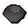
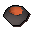
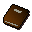
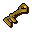
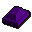
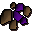
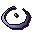

Elemental Workshop
Scripts in
scripts/quests/quest_elemental_workshop/NPCs involved
Items involved

A stone bowl
A stone bowl
Battered book
Battered key
Elemental metal
Elemental ore
Elemental shieldInvolvement is derived from identifiers referenced by the quest scripts.